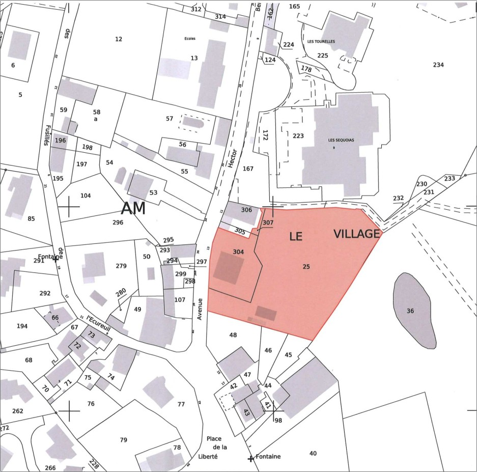
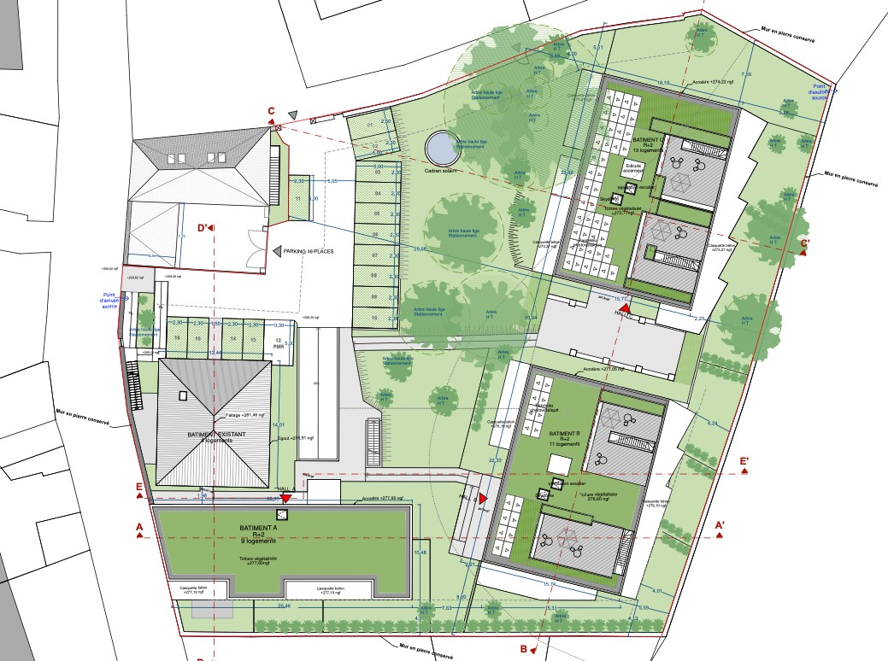
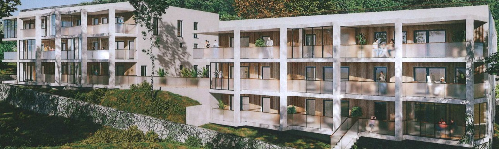
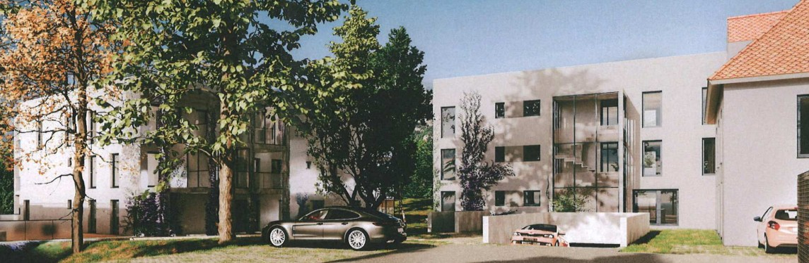
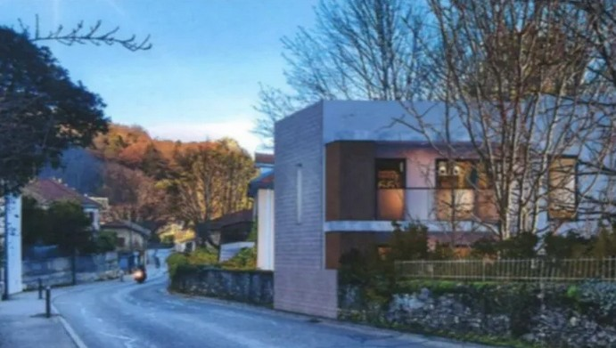

Voici quelques plans et vues qui donnent une idée du projet prévu au centre du village :

Plan du village et parcelles concernées

Plan du projet immobilier

Vue des 2 bâtiments sur la droite du plan ci-dessus

Autre vue des 2 bâtiments sur la droite du plan ci-dessus

Vue du bâtiment en bas à gauche du plan ci-dessus, donnant sur l'avenue Victor Hugo au milieu du village